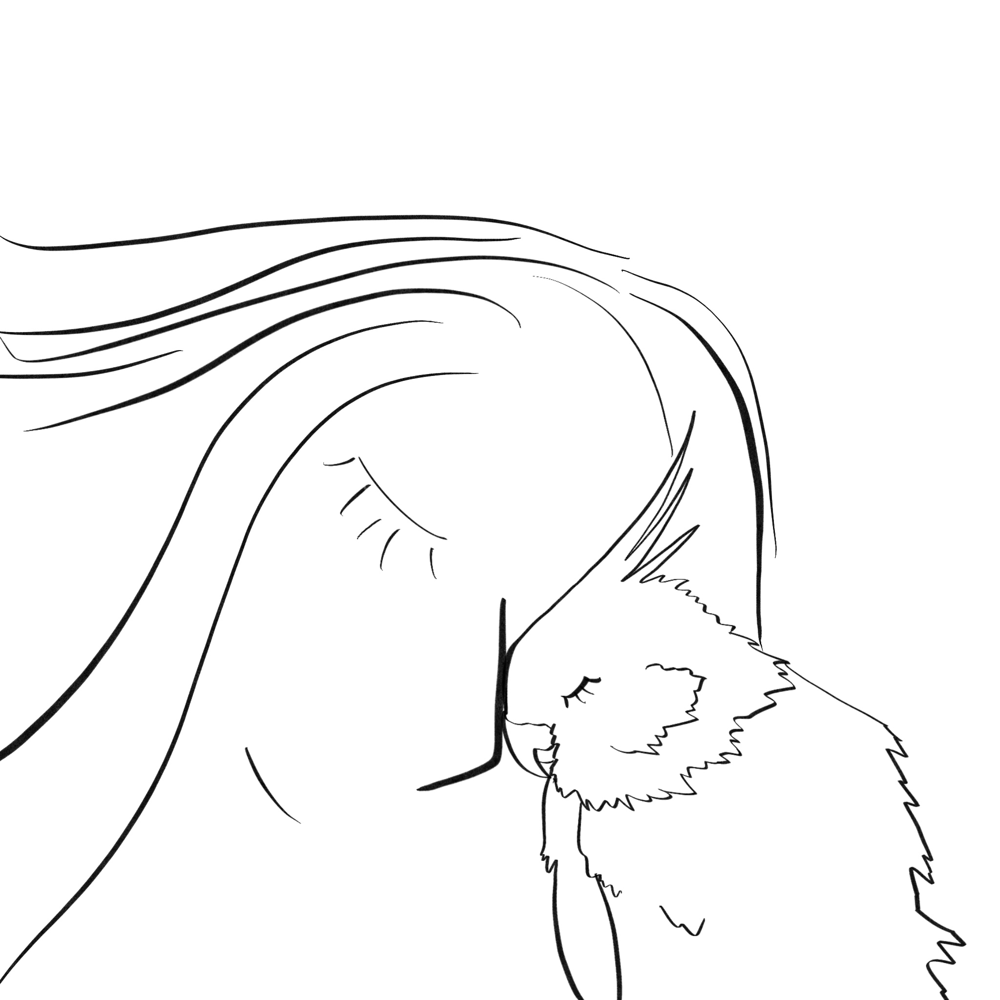

Another Friend
The birder was called, and nothing came of it. The flyers deteriorated as time passed.
...
A year goes by.
...
Another year goes by.
...
At an estate sale a polaroid of Signal is found! Phone calls are made. A story unfolds...
Signal was brought inside as winter moved in the first year. An elderly woman shared her last years with Signal.
The local shelter has a new arrival. Phone calls are made.
